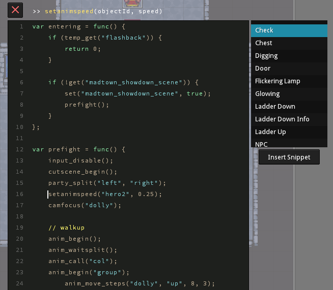

The Map-Editor allows the easy creation and modification of Maps, NPCs and Events (e.g. cutscenes).
It's not an external Application but runs inside the game. This allows for rapid iteration by immediately being able to test your changes.
Autotiles was one of the more timesaving features I implemented:
Tilemaps are internally represented as an array of numbers.
Each Tile has an Index that is associated with it. -1 represents an Empty Tile.
In this example I have a palette of 16 different Tiles per Autotile (grass and water).
By checking the neighbouring Tiles, I can calculate which Tile is the best fit.
This technique makes heavy use of bitwise logic to determine the best Tile.
(an improved version of this technique is used in the current version)
There is also a built in Script-Editor.

Once you make changes it reloads the Script without the need to reload the whole map.
I also built in snippets, which are common code blocks that get inserted into the script.
The snippets are saved in an external file and can be extended with any Text-Editor.
The editor supports simple command completion. Everything that has been defined as an API function,
will be available in a dropdown.
Additionally each API function displays it's expected parameters (on top near the close button).
This is accomplished with an automated command line tool.